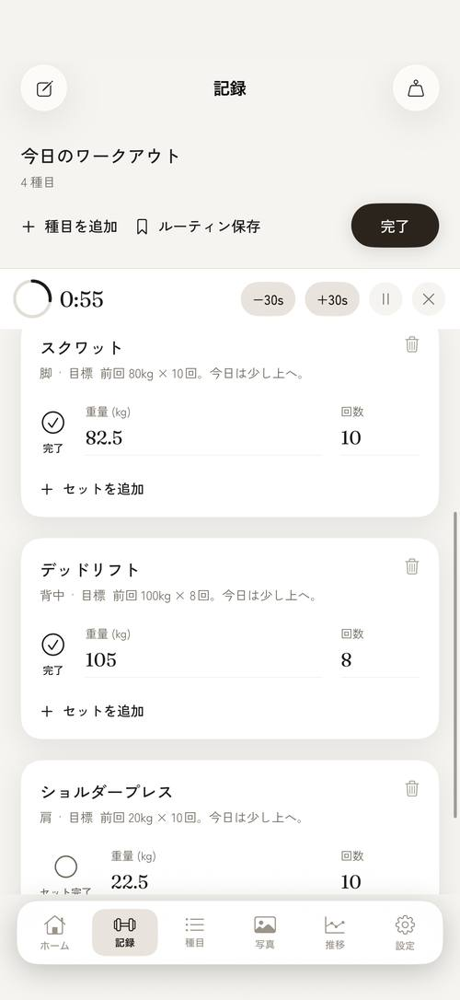

体づくりの記録を、ひとつに。
トレーニングも、体重も、体の写真も。ひとつに束ねて、次の目標を示します。
- 使う場面
- 体づくり
- 使える端末
- iPhone
- 記録の置き場所
- この端末の中


今日の自分が、ひと目で。
最新の体重と前回差、体脂肪、前回のトレからの日数、今週の頻度を、ひとつのホームに。アプリを開くたび、自分の現在地が分かります。
「ベンチプレス ↑ / 体重 ↓ / 体脂肪 ↓」——この4週間の流れを一行で結び、挙上の伸びと体の変化をつなげて見せます。
記録は、迷わず一行で。
種目を選ぶと前回の記録がすぐ出て、「前回 60kg × 11回。少し重くしてみましょう。」のように、今日狙う重量と回数を提示。ログを掘り返さず、次のセットへ。
セットを終えたら、休憩タイマーが次の一本までを数えます。毎回同じコンディションで。
体の変化を、なめらかな線で。
体重・体脂肪を 1ヶ月 / 3ヶ月 / 全期間で振り返り。目標ラインを重ねて、今の位置を確かめられます。
煽る数字ではなく、ただ事実を。変化が積み上がっていきます。
数字だけじゃ見えない変化を、写真で。
前回の写真に重ねて撮るから、同じ角度で見比べられます。
月ごとに、あゆみを振り返る。
カレンダーと体型写真で、その月の変化をひとまとめに。
広告も追跡も、ありません。
記録は端末と、あなたの iCloud の中だけに保存されます。
次の目標
過去の記録から、今日狙う重量と回数を一行で提示。ログを掘り返さず、迷わず次のセットへ。
写真スタジオ
同じ向きで撮り重ね、前回をうっすら重ねて構図を合わせる。Before / After スライダーやタイムラプスで変化を見返せます。
体組成の推移
体重・体脂肪をなめらかな線で。目標ラインを重ねて、今の位置がわかります。
月次の章
その月の歩みを、写真・体組成・挙上の動き・頻度で一篇の章に。煽らず、ただ事実を物語に。
インターバル
セットの合間は、リングのタイマーが数えます。集中を切らさずに。
端末の中で完結
記録も体型写真も、原則あなたの端末の中に。私たちは見ません。広告も追跡もありません。
まずは、無料ではじめられます。
トレーニングの記録も、体重も、体の写真も無料で。無料では直近 10 日分の記録を表示し、それより前は Pro でいつでも見返せます。これまでの歩みが消えることはありません。
全期間の保持
10 日より前も含めて、写真・推移・月次の章をすべて見返せます。
iCloud バックアップ
あなた自身の iCloud に同期。端末を変えても記録を守れます。
ヘルスケア連携
体重・体脂肪をヘルスケアから取り込み、記録の手間を減らします。
記録は無料のまま
トレーニングの記録とインターバルは、いつでも無料で使えます。
価格は税込です。月額・年額は自動更新、買い切りは一度きりのお支払いです。解約・更新の詳細は 特定商取引法に基づく表記 をご覧ください。
あなたの体は、あなたのもの。
体型写真という機微なデータを扱うからこそ、KATACHI は外部にデータを送りません。購入の判定も Apple の StoreKit のみで行い、行動追跡サービスや広告 SDK は一切使っていません。詳しくは プライバシーポリシー をご覧ください。
KATACHI は無料で使えますか？
トレーニングの記録・体重・体型写真は無料で使えます。無料では直近 10 日分の記録を表示し、それより前の全期間の見返し・iCloud バックアップ・ヘルスケア連携は Pro（月額 ¥270／年額 ¥2,400／買い切り ¥4,200）で解放できます。これまでの記録が消えることはありません。
体型写真やデータは外部に送信されますか？
いいえ。記録も体型写真も原則あなたの端末の中だけに保存し、外部に送信しません。広告や行動追跡もありません。
種目ごとの記録をグラフで見られますか？
はい。種目ごとに推定 1RM（自重種目は最高回数）の推移をグラフで確認できます。体重・体脂肪の推移グラフ、月次のまとめもあります。
ヘルスケアと連携できますか？
Pro でヘルスケア（HealthKit）から体重・体脂肪を取り込み、記録の手間を減らせます。
対応端末は？
iPhone（iOS）向けのアプリです。
筋トレの記録表（印刷用・無料）
種目・重量・回数を書く表と、体の記録表。
食事記録表の書き方（印刷用・無料）
1週間の食事を書く表と、1日分のくわしい表。
筋トレの記録が続かなかった私が、「写真」で続いた話
続かないのは意志ではなく、仕組みの問題だった。
筋トレ・ダイエットの記録方法。ビフォーアフター写真で続けるやり方
写真・体重・種目の3つに絞って続ける。
体重の記録が続かない・体重が変わらない停滞期に
写真で体の変化を残す方法。
筋トレを続けても体重が変わらないと感じる理由
体重計の数字だけでは見えない変化を、写真で確かめる。